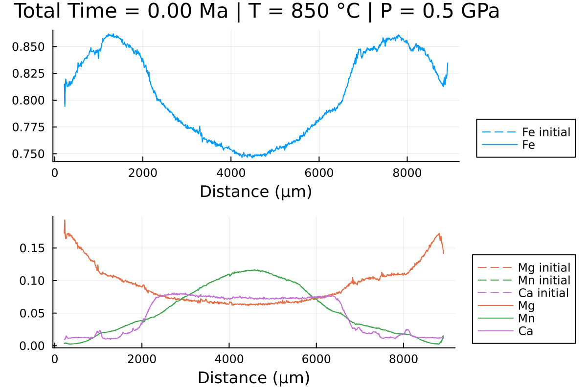

Updating pressure and temperature conditions
When modelling diffusion in garnet, it may be relevant to update the pressure and temperature (PT) conditions during the simulation, i.e. to model a decompression event in the retrograde path.
To do this, we can use a callback function. A callback function is a function that can be called in our solver when a certain condition is met, i.e. when a certain time is reached. It is based on the DiffEqCallbacks package from the DifferentialEquations.jl ecosystem.
For this tutorial, we will use the same data from the tutorial in 1D Cartesian coordinates:
using DiffusionGarnet # this can take a while
using DelimitedFiles
# load the data of your choice (here from the text file located in https://github.com/Iddingsite/DiffusionGarnet.jl/tree/main/examples/1D, place it in the same folder as where you are running the code)
data = DelimitedFiles.readdlm("Data_Grt_1D.txt", '\t', '\n', header=true)[1]
Mg0 = data[:, 4] # load initial Mg mole fraction
Fe0 = data[:, 2] # load initial Fe mole fraction
Mn0 = data[:, 3] # load initial Mn mole fraction
Ca0 = data[:, 5] # load initial Ca mole fraction
distance = data[:, 1]
Lx = (data[end,1] - data[1,1])u"µm" # length in x of the model, here in µm
tfinal = 15u"Myr" # total time of the model, here in Myr
# define the initial conditions in 1D of your problem in that order.
IC1D = InitialConditions1D(Mg0, Fe0, Mn0, Lx, tfinal)We will now define the PT evolution of our model. To do this, we define 3 arrays containing the pressure, temperature and the time at which the conditions are updated:
T = [900, 850, 800, 750, 700, 650, 600, 550]u"°C"
P = [0.6, 0.5, 0.4, 0.3, 0.3, 0.3, 0.3, 0.3]u"GPa"
time_update = [0, 2, 4, 6, 8, 10, 12, 14]u"Myr"All three arrays must have the same size and with units. Make sure to also define the conditions at time 0.
This can be supplied to Domain:
domain1D = Domain(IC1D, T, P, time_update)Now that we have the time and PT conditions to update, we need to create our callback function. We will use the PresetTimeCallback() function which takes as input the times at which the callback is to be triggered and the function to be called at that time.
# extract time_update_ad from domain1D
@unpack time_update_ad = domain1D
# define our callback function
update_diffusion_coef_call = PresetTimeCallback(time_update_ad, update_diffusion_coef)time_update_ad is the equivalent of time_update in nondimensional time. update_diffusion_coef is a function that updates the diffusion coefficients according to the new PT conditions.
We can now provide our callback function to simulate and run our model:
sol = simulate(domain1D; callback=update_diffusion_coef_call);This outputs the time at which the callback function was called and the new PT conditions, and the total solver runtime:
New temperature and pressure: 850.0 °C and 5.0 kbar, updated at 2.0 Myr.
New temperature and pressure: 800.0 °C and 4.0 kbar, updated at 4.0 Myr.
New temperature and pressure: 750.0 °C and 3.0 kbar, updated at 6.0 Myr.
New temperature and pressure: 700.0 °C and 3.0 kbar, updated at 8.0 Myr.
New temperature and pressure: 650.0 °C and 3.0 kbar, updated at 10.0 Myr.
New temperature and pressure: 600.0 °C and 3.0 kbar, updated at 12.0 Myr.
New temperature and pressure: 550.0 °C and 3.0 kbar, updated at 14.0 Myr.
0.752661 seconds (44.65 k allocations: 25.676 MiB)We can now plot our results and see how the change in PT has affected our diffusion profiles:
@unpack tfinal_ad, t_charact = domain1D
anim = @animate for i = LinRange(0, tfinal_ad, 100)
l = @layout [a ; b]
p1 = plot(distance, Fe0, label="Fe initial", linestyle = :dash, linewidth=1, dpi=200, title = "Total Time = $(round(((i)* t_charact);digits=2)) Ma", legend=:outerbottomright, linecolor=1,xlabel = "Distance (µm)")
p1 = plot!(distance, sol(i)[:,2], label="Fe",linecolor=1, linewidth=1)
p2 = plot(distance, Mg0, label="Mg initial", linestyle = :dash, linewidth=1, dpi=200,legend=:outerbottomright,linecolor=2,xlabel = "Distance (µm)")
p2 = plot!(distance, Mn0, label="Mn initial", linestyle = :dash, linewidth=1, linecolor=3)
p2 = plot!(distance, Ca0, label="Ca initial", linestyle = :dash, linewidth=1, linecolor=4)
p2 = plot!(distance, sol(i)[:,1], label="Mg",linecolor=2, linewidth=1)
p2 = plot!(distance, sol(i)[:,3], label="Mn", linecolor=3, linewidth=1)
p2 = plot!(distance, 1 .- sol(i)[:,1] .- sol(i)[:,2] .- sol(i)[:,3], label="Ca", linecolor=4, linewidth=1)
plot(p1, p2, layout = l)
end every 1
println("Now, generating the gif...")
gif(anim, "Grt_1D_var_TP.gif", fps = 7)
println("...Done!")
which outputs:

We can clearly observe the slowing down of the diffusion processes as the PT conditions decrease with time.